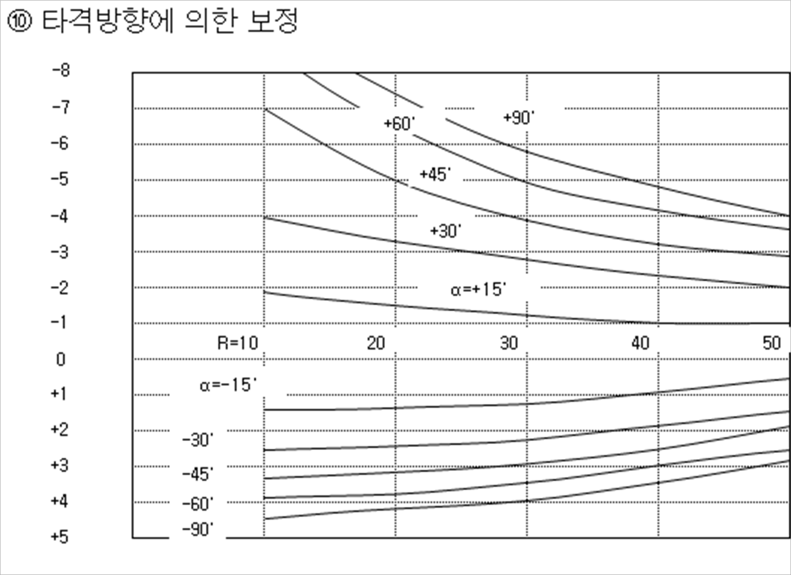

현장명 :
DATA SHEET
◎KS F 2730 콘크리트 압축강도 추정을 위한 반발경도 시험방법
◎300㎜*300㎜를 넘지 않는 한 지점을 정하는 것이 효과적이며, 20개 평균값으로부터 오차범위 ±20% 이상값은 버리고 나머지로 평균값을
구하되 범위를 벗어나는 시험값이 4개 이상인 경우 전체 시험값을 버리고 새로 재시험을 한다.
◎반발경도 계산
Fc = (7.3R0+100)×0.098 = 7.3x()+100 =x 재령계수=MPa
타설일 :
시험일 :
재령보정계수 : 일α =
시험위치 :
시험자 :
감리원 :
재령보정계수
